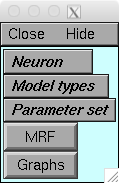
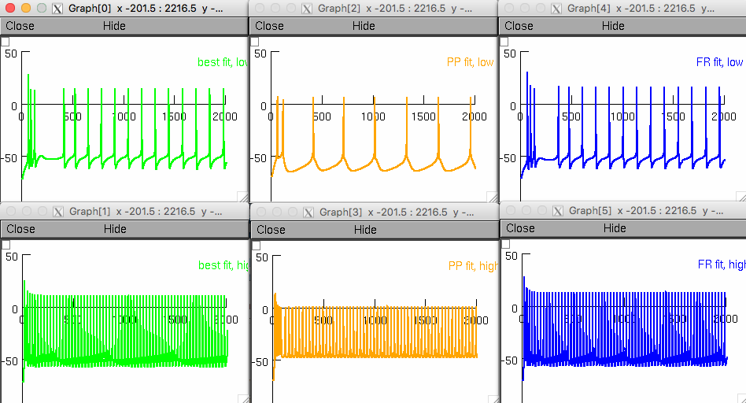

README for Rumbell et al 2016 code
The below help is for the unix/linux environment. If you need help for mswin or graphical Mac OS X please consult https://senselab.med.yale.edu/ModelDB/NEURON_DwnldGuide.cshtml
First, the .mod files in the optmz/ and model/ directories must be compiled, using:
|-> nrnivmodl optmz model
Models of both the young and aged neurons can be viewed by running the following commands:
|-> nrngui init_gui.hoc
This initialises NEURON with a GUI window containing buttons to instantiate different models.

The options are:
Neuron -> "young" or "aged"
Model types -> "4-channel" or "8-channel"
These variables select which of the 4 simulation results shown in Figures 4, 5, 7 or 8 to load.
After the variables are set, clicking the "Graphs" button will load panels c, d and e for the selected simulation (i.e. parameters are set in the model for the best total fit, best PP fit and best FR fit from those optimization results, and the model is then run at both low input current (+80 pA Aged, +230 pA Young) and at high input current (+380 pA).
For example selecting Neuron -> Aged, and Model types -> Advanced 7 channel mode results in the following graphs similar to Figure 8:

Selecting the "MRF" button instead will load the "Multiple Run Fitter" window, where error function values are shown.
The "MulRunFitter[0] Domain" window can be closed.
In the "MulRunFitter[0]" window, all of the different input current levels used in the suprathreshold fitting can be accessed in the 'Generators' panel on the right. Clicking one of these 'generators' brings up a window showing the empirical trace in red.
The input current is listed as "Before: pyr_.inj1_.amp=".
All of the error functions used at this current injection level are on the right, each listed as "pyr3_.comp[1].v( 0.5)".
Selecting one of these will show the error value for that error function in the box just below (before a simulation is run, final error values are listed as "xxxxxxxxxx").
Clicking the "Error Value" button in this window will run the model, showing the model membrane potential as a black trace.
Error function values are now displayed in the middle box, on the right, and can be viewed individually by clicking through the list in the right panel.
The "Error Value" box at the top shows the weighted sum of all error functions at this input current level.
Back in the MulRunFitter[0] window, clicking "ErrorValue" will simulate all current injections, and a total error for the model will appear.
Parameters are currently not correctly displayed in the "Parameters" side of the window.
Parameter alterations are currently done from the NEURON terminal.
The list of available parameters is in the file 'parameters.dat'.
These are 'dummy' parameters (they all have d in front), which are then scaled according to factors found in Table 3 in the paper when set throughout the model.
The current value of each parameter can be found by typing it in the NEURON terminal.
To change a parameter, set the 'dummy' version using e.g.:
|-> dgnaf = 0.04
Then set throughout the model using:
|-> set_conds()
for conductance parameters, or:
|-> set_kins()
for kinetic parameters.
'dg' parameters are maximal conductances, 'dtm' parameters are activation time constant modifiers (kinetic), and 'dvs' parameters are activation voltage modifiers (kinetic).
File contents
root/
- custominit.hoc
- Creates the 'holding current' clamp, and contains a custom version of the init() proc that initializes the model using the holding current method described in the paper
- init_gui.hoc
- Main .hoc file to run to get a GUI for selecting the neuron model and parameter set to load, and plot Figures.
- Parameter combinations for each of the final models are hardcoded in the 'set_model_parameters()' obfunc (line 68)
- init.hoc
- Initialization file loading just straight into the MultipleRunFitter window, without any parameters set
- This is the file used normally for running optimizations
- Setting RUN=1 will start a DE run. Setting MULOBJ=1 as well will start an NSDE run (20 objectives). Setting NSDE_COMB_FFS=1 will normally start a NSDE run with 2 (or however many) objectives, but will not work without additional settings files.
- re_init.hoc
- Initialize a new model AFTER already loading a model
- vsrc.ses
- Session file loading the holding current clamp
root/data/
- Dec15IR2e_y/
- Contains data files for all Young neuron current injection recordings
- Jun24IR2i_o/
- Contains data files for all Aged neuron current injection recordings
- rands.dat
- list of 1000 random numbers
- rnd.sh
- random number generator script. New random seeds can be generated using "./rnd.sh 1000 > rands.dat"
root/model/
- .mod files for all ion channels
- pyr3.hoc
- Loads the cell model by calling pyr3_template
- pyr3_template
- Morphological model in .hoc code, from Traub2003
- Scaling factors for young and aged neurons are hardcoded in the new declaration of proc init(), lines 51--64
root/optmz/
- multfit/
- Contains error function files used in the MultipleRunFitter()
- e_phaseplane.hoc contains code for the PP error functions
- e_apwinfrcv.hoc contains code for the FR error functions
- e_apwinfrvc.hoc also contains code for the WF and delay error functions
- mulfit.hoc
- loads all files necessary to calculate error functions using the MultipleRunFitter
- feature_weaver.mod
- mod file (needs compiling) involved in error function calculations
root/output/
- output files from the optimization runs get written here
- geners.dat
- Information about which generators (input current protocols) are being used gets written here every time the model is instantiated
- params.dat
- The list of parameters loaded gets written here
- vtraces.dat
- This file is ready to receive voltage traces when recordings are being saved
root/preProcess/
- Matlab files in here for using the LHS
- getWeightsFromLHS.m
- Matlab script to calculate error function weights from a file 'lhsrsults.dat' in the 'output' folder.
- Finds the top 5% of error values in the lhs results file, for each function
- The number in 5% is hardcoded on line 33
- setupLHS.m
- Matlab script to sample the parameter space and save all points found to be simulated at the LHS stage of the optimization
- loads 'setup/parameters.dat' to determine ranges for each parameter
- uses the 'lhsdesign' function to generate the sampling
- writes the output population to 'output/curr_population'
- this can then be simulated by setting RUN=1 and RUNLHS=1 in the init.hoc file
root/setup/
- The most important folder for setting up the models and optimization. In order that they are loaded:
- setupMRF.hoc
- Sets up basics of the MultipleRunFitter, which holds information about parameters and error functions to be used in the optimization
- cell names are hardcoded in here on lines 12 and 14, and must match prefixes in the data/ folder
- calls setupGenerators.hoc and setupParameters.hoc to load error functions and parameters
- opens several output files ready for writing
- contains procs for running output simulations, generating things like the voltage traces, IV curves, FI curves used in the Figures
- setupGenerators.hoc
- loads generators for either the young or aged neuron, where each generator is a current injection protocol at a certain input current level
- sets error functions for each listed in the 'fitnessfunctions.dat' file by calling 'generatorMoulds/generatorMouldsNew.hoc' for each error function
- generatorMoulds/generatorMouldsNew.hoc
- a generic template for setting up an error function according to the parameters read from 'fitnessfunctions.dat' by 'setupGenerators.dat'
- parameters include: which type of error, the time windows relating to the error, and the weight of the error
- setupParameters.hoc
- VERY important file for setting up the models properly
- the dummy parameters are initialized here
- the maximal conductance ratois throughout compartments of the Traub morphology are hardcoded here in the set_conds() proc (line 167)
- the set_kins() proc checks to see whether kinetics have been modified from their default values, and tells the ion channels to use the changed values if they have been
- de_setup.hoc
- Contains the code for the Differential Evolution and Non-Dominated Sorting Differential Evolution algorithms
- Along with all parameters for using these algorithms
- pop_size controls the populations size (default 256)
- F controls the DE distance change rate (default 0.9)
- max_time controls the time to run the algorithm for in seconds (default 144000 which is 40 hours)
- LOAD_GENERATION controls whether to load a saved generation (i.e. to continue a run from a saved point) (0 = no, generate new population at random; 1 = yes)
- DE() and NSDE() procs are the main loops for the algorithms
- Functions are in place for either parallel or non-parallel operation
- similar to de_setup.hoc, but sets pop_size to the number of population found in the output/curr_population file, and only runs for one generation, saving the output error function values to output/lhsresults.dat